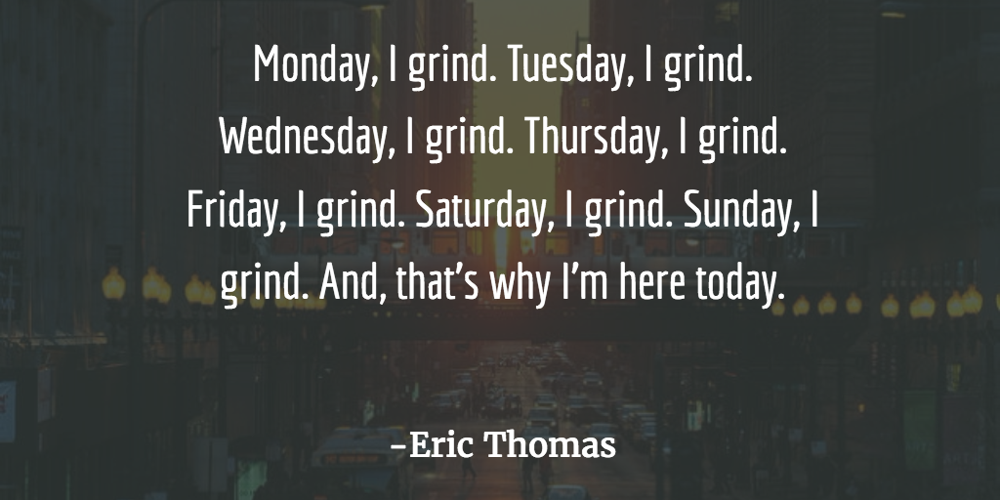

My first relationship post. I know a lot of y'all reading are probably too young to have wives but I am certain you have other women in your life and this applies to them as well.
Women (and feminine people) are socialized to give. Women are the first responders emotionally, the aid-givers mentally and physically. They lift everyone up as best they can and when a load is too heavy for someone they love, they shoulder it. In return, I feel they ask for very little and it would benefit everybody in the situation if we all tried to rise to the occasion instead of asking her to accept less so you can grind. I admit to being at fault here, too. I struggle with finding a that happy medium between working and not working (quality time with family, self-care, etc). But I try to curb my obsessiveness and be good to the people around me by keeping a few things in mind.
Don't act like she's a nag or a bother. Before you get all defensive, I'm not belittling the grind. The grind is essential to creating a successful business. What I'm saying is that you can be more aware of and accountable for the things you're supposed to do for your "right now" life, too. The things that can and should be done while you grind. If the woman in your life has reminded you to take out the trash (or handle whatever other tasks you're supposed to) 5 times and you're still deep-diving in your DAW, you're lagging. And that's just what's real. For one thing, that's your duty. She's not asking you to climb Mount Everest. She's trying to get you to do something you should've already done. For two, you might use 10 minutes taking out the trash but the positive effects go far beyond the time it requires. Simple acts where you're taking care of business reinforce that you're an active participant in your relationship with that woman. It serves to remind her that she's important to you and help her feel valued and validated in continuing to support you.
The idea that long term gain beats short term pain takes over quick, though. And the reason the grind can, in your mind, take precedence over everything because it's so easy to think "when I'm on, things will be better" and daydream about how you'll be able to take care of everybody you love. And that is a noble pursuit, but you can't ignore the other parts of your life in favor of grinding alone. The things you drop so you can grind have to be done by someone. And there's probably a woman in your life taking up that slack so you can do your thing.
Slay dragons!
I'm not saying don't reach for your goals. Nah. Grind hard! Believe in yourself! Conquer your demons and slay your dragons! But sometimes a dose of reality is helpful in remaining grounded and prioritizing for the position you're in currently. Nothing is guaranteed. You may not "make it" as a producer. You may never be wealthy. That's the truth. But the people that have loved you and cared for you will need you regardless and you need them, too. Not only in the future or the past but in the present as well. You need them right now. You can't let those connections die on the vine for the sake of grinding. Nourish your close relationships and cherish those people. Especially the women in your life. She (whoever "she" may be; wife, mother, girlfriend, best friend) is never going to tell your how weighed down and anxious and depressed she is. She's going to put on a brave face for you, laugh at your stupid jokes and love you. She's going to provide the light you use to see the end of the tunnel. Live up to it. Be the kind of guy that can say, "I deserve this." From your wives, your mothers, your daughters, your aunts. Be worthy of them.
Or at least do your best not to have her riding your back about something she already told you to do multiple times. I promise she hates it just as much as you do. (Probably more.) Trust me. I'm married. I know these things.

The Grind
The point of contention is striking that balance where you feel like you're going at a pace that will allow you to meet your goals while being there for your family and friends. I don't have all the answers, Sway. But I know for sure that it's worth it to try.
P.S.: This post is not meant to leave out the men and masculine people. Not at all. If the men in your life are doing the emotional work of supporting you, acknowledge that. But in general, your homeboys, uncles, dads and granddads won't be carrying the same emotional burden as the women. They're not the ones you call when you're about to break down because you feel like it's never going to happen for you. You call mom dukes. You call grandma. You call aunty or bestie. You cry (or don't). You share the heft of your feelings and insecurities about the situation. And they help you carry it. They encourage you. Hell, sometimes they carry you through it, if I'm completely honest. So what I'm saying is: honor them. Honor their contributions to your life and make them feel all the things they make you feel: loved, significant, supported, believed in.
Go. Do it naooo. (Arnold voice)
Attributions:
- Vicki73 for the Skyrim "dragon slayer" photo manipulation.
- I forgot where I got the "Manhattanhenge" photo. But if it's yours or you know the photographer, please let me know. Happy to give them credit.